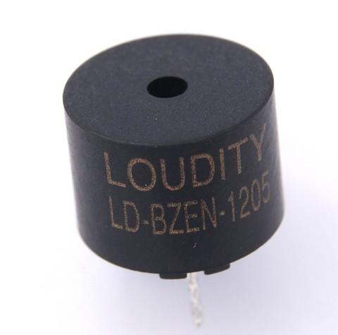

9. Zumbador¶
{kind=link}
Objetivos¶
- Emitir un tono de una frecuencia determinada con el zumbador
- Controlar el tiempo de emisión de sonido
- Emitir notas musicales con el zumbador
Zumbador o Buzzer emisor de sonidos¶
El zumbador (en inglés buzzer) es un pequeño altavoz con forma cilíndrica y de color negro, situado entre el teclado y el display. Su función es hacer señales acústicas para llamar la atención, por esa razón tiene un sonido especialmente agudo y penetrante. La calidad del sonido emitido es pobre. El zumbador no tiene control sobre la intensidad del sonido ni sobre su timbre (sonoridad). Por otro lado, el zumbador sí que tiene la capacidad de reproducir diferentes notas musicales controlando la frecuencia (tono) y la duración (figura) del sonido emitido. Esto le permite reproducir partituras de una forma simple.
Las unidades utilizadas para medir frecuencia serán los hercios, o su símbolo Hz.
Un hercio equivale a una oscilación por segundo. Otra unidad común es el kilohercio o kHz que equivale a 1000 Hz ó mil oscilaciones por segundo.
Las unidades utilizadas para medir tiempo serán los milisegundos o su símbolo ms
Mil milisegundos equivalen a un segundo.
El oido humano es más sensible al rango de frecuencias que va desde 500 Hz (graves) hasta los 2000 Hz (agudos). Este rango lo cubre aproximadamente las octavas 5ª y 6ª (octavas musicales segunda y tercera)
La función buzzFreq()¶
-
buzzFreq(int Frequency)¶ Esta función emite un sonido por el zumbador con una frecuencia determinada.
Frequency: este parámetro establece la frecuencia del sonido que se va a emitir por el zumbador. Una frecuencia cero apaga el oscilador interno y mantiene al zumbador en silencio. El rango de frecuencias válidas va desde 15 hercios hasta 32767 hercios.
El oído humano puede llegar a percibir sonidos de una frecuencia hasta 20000 hercios en el mejor de los casos. Por encima de 20000 Hz, comienzan los ultrasonidos, que los humanos no pueden percibir. A medida que una persona se hace mayor, su sensibilidad a las altas frecuencias decrece, de forma que, en la práctica, la mayoría de las personas no son capaces de distinguir sonidos con frecuencias por encima de 16000 Hz.
En el siguiente ejemplo, al presionar el pulsador 1, el zumbador emitirá un sonido de 2000 Hz durante un tiempo de 62 milisegundos y permanecerá apagado durante un tiempo de 62 milisegundos. El sonido se repetirá mientras el pulsador 1 permanezca pulsado.
1 2 3 4 5 6 7 8 9 10 11 12 13 14 15 16 17 18 | // Emite un tono de 2000 hercios al presionar el pulsador 1
#include <Wire.h>
#include <PC42.h>
void setup() {
pc.begin(); // Inicializar el módulo PC42
}
void loop() {
// Si se presiona el pulsador 1
if (pc.keyPressed(1)) {
pc.buzzFreq(2000); // Emite un sonido de 2000 Hz
delay(62); // durante 62 milisegundos
pc.buzzFreq(0); // Apaga el generador de sonido
delay(62); // durante 62 milisegundos
}
}
|
La función buzzTone()¶
-
buzzTone(int Tone)¶ Esta función es semejante a la función
buzzFreq(), produce un sonido de una frecuencia determinada por el parámetroToneTone: Nota musical que sonará en el zumbador. La nota se puede expresa con un número del 0 al 127 o con una constante. La nota 0 (Silence) es especial y sirve para silenciar el generador de sonido.La siguiente tabla representa las constantes, el valor equivalente y las notas que representan para la primera octava musical (cuarta octava en la notación científica).
Constante Valor Frecuencia Nota Científica Nota Do4 49 261 Hz C4 Do Do_4 50 277 Hz C#4 Do sostenido (Do#) Re4 51 294 Hz D4 Re Re_4 52 311 Hz D#4 Re sostenido (Re#) Mi4 53 330 Hz E4 Mi Fa4 54 349 Hz F4 Fa Fa_4 55 370 Hz F#4 Fa sostenido (Fa#) Sol4 56 392 Hz G4 Sol Sol_4 57 415 Hz G#4 Sol sostenido (Sol#) La4 58 440 Hz A4 La La_4 59 466 Hz A#4 La sostenido (La#) Si4 60 494 Hz B4 Si El resto de octavas tienen la misma denominación para las notas, cambiando solo el número final para designar la octava. Para cambiar una octava, se puede añadir o restar el número 12:
Do4+ 12 =Do5Do4- 12 =Do3La siguiente tabla muestra el valor y la frecuencia de la nota Do de cada una de las octavas:
Constante Valor Frecuencia Nota Científica Nota Silence 0 0 Hz Sin sonido (silencio) Do0 1 16,35 Hz C0 Do Subcontraoctava Do1 13 32,70 Hz C1 Do Contraoctava Do2 25 65,41 Hz C2 Do Gran octava Do3 37 130,8 Hz C3 Do Pequeña octava Do4 49 261,6 Hz C4 Do Octava prima Do5 61 523,2 Hz C5 Do Octava segunda Do6 73 1046 Hz C6 Do Octava tercera Do7 85 2093 Hz C7 Do Octava cuarta Do8 97 4186 Hz C8 Do Octava quinta Do9 109 8372 Hz C9 Do Octava sexta Do10 121 16744 Hz C10 Do Octava séptima Fa10 127 23679 Hz F10 Fa Octava séptima
En el siguiente ejemplo, al presionar el pulsador 1 sonará una nota más grave y al
presionar el pulsador 2, sonará una nota más aguda.
La nota inicial será el La de la primera octava (La4) que es el tono que se utiliza
habitualmente para afinar instrumentos.
1 2 3 4 5 6 7 8 9 10 11 12 13 14 15 16 17 18 19 20 21 22 23 24 25 26 27 28 29 30 31 32 33 34 35 36 37 38 39 40 | // Emite una nota más grave al presionar el pulsador 1
// Emite una nota más aguda al presionar el pulsador 2
#include <Wire.h>
#include <PC42.h>
int nota;
void setup() {
pc.begin(); // Inicializar el módulo PC42
nota = La4;
}
void loop() {
// Muestra la nota actual en el display
pc.dispNum(nota);
// Si se presiona el pulsador 1
if (pc.keyPressed(1)) {
// Calcular una nota más grave
nota = nota - 1;
if (nota < 1)
nota = 1;
pc.buzzTone(nota); // Emite una nota musical
delay(100); // durante 0.1 segundos
pc.buzzTone(0); // Apaga el generador de sonido
delay(500); // durante 0.5 segundos
}
// Si se presiona el pulsador 2
if (pc.keyPressed(2)) {
nota = nota + 1; // Calcular una nota más aguda
if (nota > 127)
nota = 127;
pc.buzzTone(nota); // Emite una nota musical
delay(100); // durante 0.1 segundos
pc.buzzTone(0); // Apaga el generador de sonido
delay(500); // durante 0.5 segundos
}
}
|
El siguiente programa de ejemplo toca la canción de cumpleaños feliz cada vez que se presiona el pulsador 1. El programa es flexible y permite cambiar el tempo a otro más rápido o más lento, cambiando la duración de la nota más corta en la variable 'tempo' de la línea 15). También se puede cambiar la octava de la canción a una más aguda o una más grave, cambiando el valor de la variable 'octave' en la línea 18.
1 2 3 4 5 6 7 8 9 10 11 12 13 14 15 16 17 18 19 20 21 22 23 24 25 26 27 28 29 30 31 32 33 34 35 36 37 38 39 40 41 42 43 44 45 46 47 48 49 50 51 52 53 54 55 56 57 58 59 60 61 | // Al presionar el pulsador 1, suena la canción de 'cumpleaños feliz'
#include <Wire.h>
#include <PC42.h>
void setup() {
pc.begin(); // Inicializar el módulo PC42
}
void loop() {
int tempo;
int octave;
// Establece el tempo, en milisegundos, para la nota más corta
tempo = 120;
// Establece la octava. Hay 12 tonos y semitonos por cada octava
octave = 4 * 12;
// Apagar los sonidos
pc.buzzTone(0);
// Esperar mientras no se presione el pulsador 1
while(pc.keyPressed(1) == 0);
// Canción de cumpleaños feliz
// Primera columna = notas musicales (tono)
// Segunda columna = duración de cada nota (figura musical)
pc.buzzTone(octave + Do0); delay(3 * tempo);
pc.buzzTone(0); delay(10);
pc.buzzTone(octave + Do0); delay(1 * tempo);
pc.buzzTone(octave + Re0); delay(4 * tempo);
pc.buzzTone(octave + Do0); delay(4 * tempo);
pc.buzzTone(octave + Fa0); delay(4 * tempo);
pc.buzzTone(octave + Mi0); delay(8 * tempo);
pc.buzzTone(octave + Do0); delay(3 * tempo);
pc.buzzTone(0); delay(10);
pc.buzzTone(octave + Do0); delay(1 * tempo);
pc.buzzTone(octave + Re0); delay(4 * tempo);
pc.buzzTone(octave + Do0); delay(4 * tempo);
pc.buzzTone(octave + Sol0); delay(4 * tempo);
pc.buzzTone(octave + Fa0); delay(8 * tempo);
pc.buzzTone(octave + Do0); delay(3 * tempo);
pc.buzzTone(0); delay(10);
pc.buzzTone(octave + Do0); delay(1 * tempo);
pc.buzzTone(octave + Do1); delay(4 * tempo);
pc.buzzTone(octave + La0); delay(4 * tempo);
pc.buzzTone(octave + Fa0); delay(4 * tempo);
pc.buzzTone(octave + Mi0); delay(4 * tempo);
pc.buzzTone(octave + Re0); delay(8 * tempo);
pc.buzzTone(octave + La_0); delay(3 * tempo);
pc.buzzTone(0); delay(10);
pc.buzzTone(octave + La_0); delay(1 * tempo);
pc.buzzTone(octave + La0); delay(4 * tempo);
pc.buzzTone(octave + Fa0); delay(4 * tempo);
pc.buzzTone(octave + Sol0); delay(4 * tempo);
pc.buzzTone(octave + Fa0); delay(8 * tempo);
}
|
La función buzzPlay()¶
-
buzzPlay(int Tone, int milliseconds)¶ Esta función permite hacer sonar en el zumbador una o más notas musicales durante un tiempo determinado. Los parámetros de la función son los siguientes:
Tone: Nota musical que sonará en el zumbador. Para más detalles, ver :ref:buzzTonemilliseconds: Tiempo en milisegundos que sonará la nota musical. Debe estar en un rango de 1 a 2000.La función se ejecuta inmediatamente y el programa de Arduino continúa con la siguiente instrucción mientras el zumbador suena. Esto permite enviar instantáneamente hasta 16 notas, que se memorizan y van sonando una a una. Esta función permite que suene una partitura mientras el programa de Arduino continúa ejecutándose.
-
int
buzzPlay()¶ La función
buzzPlay()sin argumentos, devuelve el número de notas que aún no han terminado de sonar de la partitura enviada al zumbador. La memoria de partitura puede almacenar hasta 16 notas. Si se envían más notas, las últimas enviadas no se almacenarán. Si es necesario enviar más de 16 notas, antes hay que esperar hasta que haya sitio libre en la memoria de partitura.Esta función devuelve cero si todas las notas han terminado de sonar.
Programa de ejemplo en el que suena una alarma de despertador utilizando la
función buzzPlay() para enviar las notas.
1 2 3 4 5 6 7 8 9 10 11 12 13 14 15 16 17 18 19 20 21 22 23 24 25 26 | // Al presionar el pulsador 1, suena una alarma de despertador
#include <Wire.h>
#include <PC42.h>
void setup() {
pc.begin(); // Inicializar el módulo PC42
}
void loop() {
// Esperar mientras no se presione el pulsador 1
while(pc.keyPressed(1) == 0);
// Enviar las notas de una alarma de despertador
pc.buzzPlay(Do7, 62);
pc.buzzPlay(Silence, 62);
pc.buzzPlay(Do7, 62);
pc.buzzPlay(Silence, 62);
pc.buzzPlay(Do7, 62);
pc.buzzPlay(Silence, 62);
pc.buzzPlay(Do7, 62);
pc.buzzPlay(Silence, 566);
// Esperar a que suenen todas las notas
while (pc.buzzPlay());
}
|
Programa de ejemplo en el que suena una música de reloj utilizando la
función buzzPlay(). En este ejemplo se muestra en el display el número
de notas que aún no han terminado de sonar.
1 2 3 4 5 6 7 8 9 10 11 12 13 14 15 16 17 18 19 20 21 22 23 24 25 26 27 28 29 30 31 32 33 34 35 | // Al presionar el pulsador 1, suena un carrillón y el
// display muestra el número de notas que aún no han
// terminado de sonar.
#include <Wire.h>
#include <PC42.h>
void setup() {
pc.begin(); // Inicializar el módulo PC42
}
void loop() {
// Esperar mientras no se presione el pulsador 1
while(pc.keyPressed(1) == 0);
// Enviar la partitura de carrillón
pc.buzzPlay(La4, 500);
pc.buzzPlay(Fa4, 500);
pc.buzzPlay(Sol4, 500);
pc.buzzPlay(Do4, 1000);
pc.buzzPlay(Silence, 10);
pc.buzzPlay(Do4, 500);
pc.buzzPlay(Sol4, 500);
pc.buzzPlay(La4, 500);
pc.buzzPlay(Fa4, 1000);
// Esperar hasta que suene toda la partitura
// Mostrar el número de notas restantes
int notas;
do {
notas = pc.buzzPlay();
pc.dispNum(notas);
} while (notas > 0);
}
|
Las funciónes buzzOff() y buzzOn()¶
-
buzzOff()¶ Desconecta el generador de sonido del zumbador. Como resultado, el zumbador deja de emitir sonido. Si el generador de sonido está funcionando en ese momento, continuará haciéndolo, de manera que si se vuelve a conectar el zumbador con la función
buzzOn(), este volverá a emitir sonido.
-
buzzOn()¶ Conecta el generador de sonido con el zumbador. Si en ese momento el generador de sonido está generando un tono, el zumbador comenzará a emitir sonido.
Ejemplo de funcionamiento de BuzzOn y BuzzOff. En el siguiente programa se genera una melodía que suena de forma continua. Presionando el pulsador 1, el sonido se desconecta. Presionando el pulsador 2, el sonido volverá a conectarse.
1 2 3 4 5 6 7 8 9 10 11 12 13 14 15 16 17 18 19 20 21 22 23 24 25 26 27 28 29 30 31 32 33 | // Genera una melodía que suena de forma contínua
// Presionando el pulsador 1, el sonido se desconecta.
// Presionando el pulsador 2, el sonido volverá a conectarse.
#include <Wire.h>
#include <PC42.h>
void setup() {
pc.begin(); // Inicializar el módulo PC42
}
void loop() {
// Tocar una melodía
pc.buzzPlay(Sol5, 500);
pc.buzzPlay(La5, 500);
pc.buzzPlay(Fa5, 500);
pc.buzzPlay(Fa4, 500);
pc.buzzPlay(Do5, 1000);
pc.buzzPlay(0, 500);
delay(500);
// Espera hasta que termine de sonar la melodía.
// Durante ese tiempo desconecta o conecta el sonido
// si se presionan los pulsadores 1 y 2
while(1) {
if (pc.keyPressed(1)) // Si se presiona el pulsador 1
pc.buzzOff(); // desconecta el sonido.
if (pc.keyPressed(2)) // Si se presiona el pulsador 2
pc.buzzOn(); // conecta el sonido.
if (pc.buzzPlay() == 0) // Si la nota ha terminado
return; // termina la espera.
}
}
|
La función buzzBegin()¶
-
buzzBegin()¶ Esta función inicializa el sistema generador de sonidos. Conecta el generador de sonido al zumbador y vacía la memoria de notas musicales enviadas por la función
buzzPlay(). Al ejecutar esta función, el zumbador deja de emitir sonido y se encuentra preparado para emitir un nuevo tono cuando reciba la orden.No es necesario ejecutar esta función al comienzo de cada programa porque la función más general
beginya inicializa todos los sistemas, incluyendo el zumbador.
Intensidad del sonido¶
La intensidad del sonido emitido por el zumbador no es igual para todas las frecuencias. A frecuencias bajas, la intensidad del sonido emitido es menor. A medida que se aumenta la frecuencia, la intensidad del sonido aumenta.
En torno a los 2000 Hz el zumbador resuena y produce un sonido de una intensidad mucho
mayor que en otras frecuencias. El típico sonido de los despertadores tiene este tono.
La frecuencia de 2000 Hz se encuentra entre una nota Si de la octava tercera
(Si6 = 1975,53 Hz) y una nota Do de la octava cuarta (Do7 = 2093,00 Hz).
Este es un tono bastante agudo que el oído humano percibe muy bien porque
se encuentra en la zona de mayor sensibilidad auditiva, desde 500 Hz hasta los 2000 Hz.
En torno a los 4000 Hz el zumbador también resuena produciendo un sonido de más intensidad, pero a esta frecuencia el oído humano tiene menos sensibilidad que a la frecuencia de 2000 Hz y el sonido no se percibe con tanta intensidad.
Precisión y exactitud de la frecuencia¶
La precisión de la frecuencia tiene un error de +-1%. Esto significa que la frecuencia realmente obtenida siempre se desvía hacia los graves o hacia los agudos en cierta cantidad. La mayoría de las frecuencias tienen una desviación menor del 0,4%, mientras que solo algunas frecuencias puntuales sufren una desviación hasta del 1%. La desviación de frecuencia es siempre la misma para el mismo tono. Este error se puede percibir como un pequeño desafino en la frecuencia. Un oído bien entrenado percibe diferencias de frecuencia hasta del 0,2%.
El error de exactitud de la frecuencia depende de la calibración que se haya realizado. Este error produce una variación de frecuencia igual en todas las frecuencias emitidas. El error de exactitud depende de la temperatura y del tiempo de funcionamiento del panel y se encuentra en torno al +-2%. Este error no se notará al emitir varios sonidos, porque afecta por igual a todas las frecuencias y el oído solo detecta notas desafinadas en el caso de que una frecuencia se desvíe respecto a otra. Sin embargo, si dos paneles intentan emitir un sonido de igual frecuencia, se puede distinguir entre ellos una diferencia de frecuencia debido al error de exactitud.
Ejercicios¶
Cambiar el siguiente programa para que suene el pitido de un despertador. La secuencia de sonidos será de cuatro pitidos de 2000 Hercios con una duración cada uno de 64 milisegundos y un espacio sin sonido de 64 milisegundos después de cada pitido. Al final de la secuencia se debe esperar un tiempo de 500 milisegundos sin sonido.
1 2 3 4 5 6 7 8 9 10 11 12 13 14 15 16 17 18 19 20 21 22 23 24 25 26 27 28 29 30 31 32 33 34 35 36 37 38 39 40 41 42 43 44 45 46 47 48 49 50 51 52 53 54 55 56 57 58 59 60 61 62 63
// Al presionar el pulsador 1, suena una canción. // Versión con tabla de datos (array) #include <Wire.h> #include <PC42.h> // Canción // Primera columna: nota musical, silencio (0) o // pausa entre notas iguales (-1) // Segunda columna: Duración de la nota (en tempos) char song[] = { La4, 4, Fa4, 4, Sol4, 4, Do4, 8, -1, Do4, 4, Sol4, 4, La4, 4, Fa4, 8, }; void setup() { pc.begin(); // Inicializar el módulo PC42 } void loop() { int tempo, octave; char i, note, figure; // Establece el tempo, en milisegundos, para la nota más corta tempo = 125; // Establece el desplazamiento de octava. // +12 = aumenta una octava. -12 = disminuye una octava. octave = 0; // Apagar los sonidos pc.buzzTone(0); // Esperar mientras no se presione el pulsador 1 while(pc.keyPressed(1) == 0); // Tocar la canción almacenada i = 0; while(i < sizeof(song)) { note = song[i]; i = i + 1; if (note == -1) { // suena una pausa entre notas iguales pc.buzzTone(0); delay(10); } else { // suena una nota musical figure = song[i]; i = i + 1; pc.buzzTone(note + octave); delay(figure * tempo); } } }
El siguiente programa ejecuta la partitura almacenada en el array
song, la música de un carrillón. Cambiar la partitura por la de otra canción.1 2 3 4 5 6 7 8 9 10 11 12 13 14 15 16 17 18 19 20 21 22 23 24 25 26 27 28 29 30 31 32 33 34 35 36 37 38 39 40 41 42 43 44 45 46 47 48 49 50 51 52 53 54 55 56 57 58 59 60 61 62 63
// Al presionar el pulsador 1, suena una canción. // Versión con tabla de datos (array) #include <Wire.h> #include <PC42.h> // Canción // Primera columna: nota musical, silencio (0) o // pausa entre notas iguales (-1) // Segunda columna: Duración de la nota (en tempos) char song[] = { La4, 4, Fa4, 4, Sol4, 4, Do4, 8, -1, Do4, 4, Sol4, 4, La4, 4, Fa4, 8, }; void setup() { pc.begin(); // Inicializar el módulo PC42 } void loop() { int tempo, octave; char i, note, figure; // Establece el tempo, en milisegundos, para la nota más corta tempo = 125; // Establece el desplazamiento de octava. // +12 = aumenta una octava. -12 = disminuye una octava. octave = 0; // Apagar los sonidos pc.buzzTone(0); // Esperar mientras no se presione el pulsador 1 while(pc.keyPressed(1) == 0); // Tocar la canción almacenada i = 0; while(i < sizeof(song)) { note = song[i]; i = i + 1; if (note == -1) { // suena una pausa entre notas iguales pc.buzzTone(0); delay(10); } else { // suena una nota musical figure = song[i]; i = i + 1; pc.buzzTone(note + octave); delay(figure * tempo); } } }
Notas de 'la cucaracha':
Do4 Do4 Do4 Fa4 La4Do4 Do4 Do4 Fa4 La4Fa4 Fa4 Mi4 Mi4 Re4 Re4 Do4Do4 Do4 Do4 Mi4 Sol4Do4 Do4 Do4 Mi4 Sol4Do5 Re5 Do5 Si4 La4 Sol4 Fa4Notas de 'cumpleaños feliz':
Do4 Do4 Re4 Do4 Fa4 Mi4Do4 Do4 Re4 Do4 Sol4 Fa4Do4 Do4 Do5 La4 Fa4 Mi4 Re4Do5 Do5 La4 Fa4 Sol4 Fa4A cada una de las notas anteriores hay que añadirle el tiempo de cada nota (figura) para completar la partitura. Este tiempo será de 200, 400 o de 800 milisegundos.